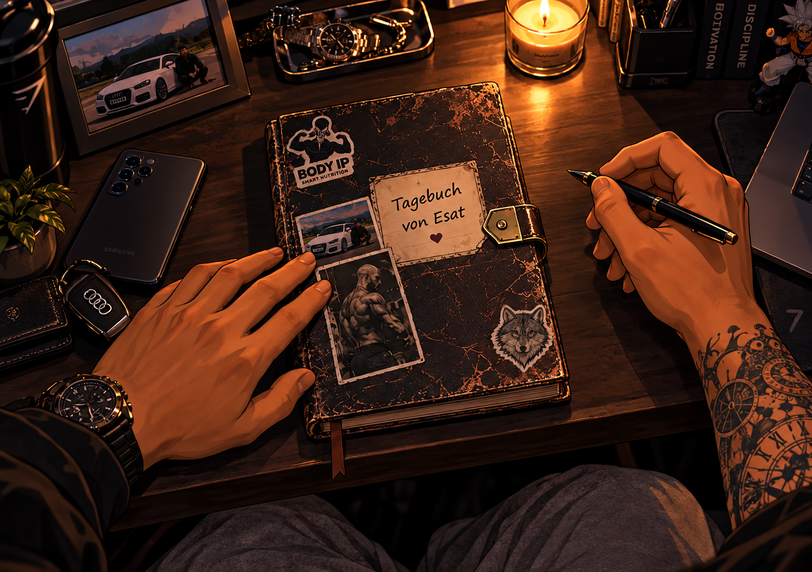
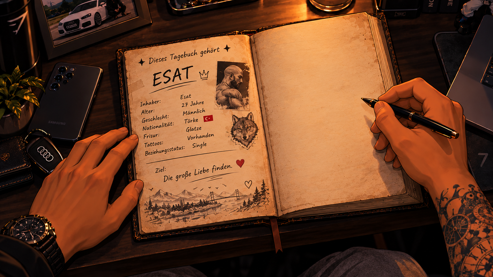

Klicke auf das Tagebuch 📖


→ Klicke auf die rechte Buchseite, um weiterzukommen.
← Klicke auf die linke Seite, um zurückzublättern.
🔎 Schrift zu klein oder zu groß? Halte Strg gedrückt und drehe am Mausrad, um die Ansicht anzupassen. Alternativ: Strg + Plus/Minus.
🖼️ Bilder anklicken, um sie größer anzusehen.
☷ Über „Kapitel wählen“ kannst du zu bereits freigeschalteten Kapiteln springen.
Bitte Passwort eingeben, um alle Kapitel freizuschalten.